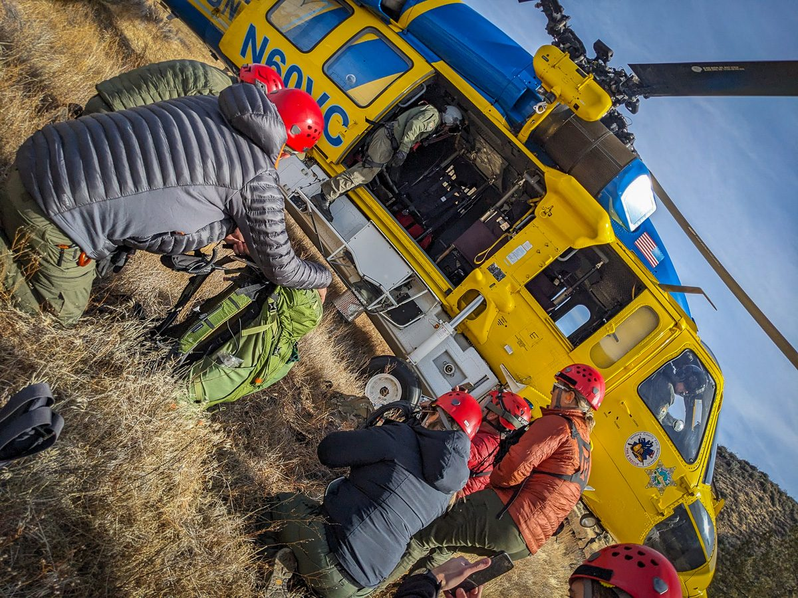
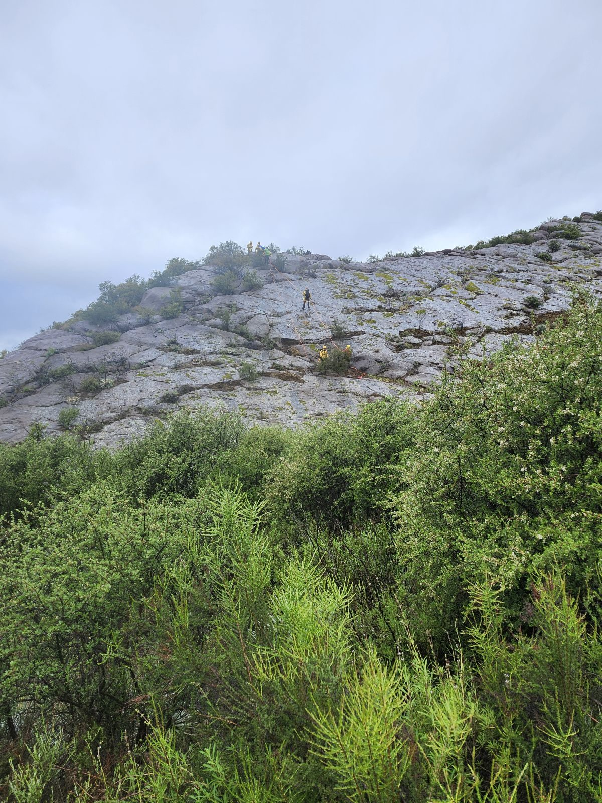

Ventura County Search & Rescue · Team 1
Fillmore, California
VCSAR Team 1 is an all-volunteer organization based in Fillmore, CA — answering the call across every ridgeline, river, and coastline in the county and beyond. When someone is lost or hurt in the backcountry, we go.
Our primary goal is simple and absolute: save lives by finding people in distress and getting them to safety. We're unpaid professionals who live full, regular lives — and answer the call when our community needs us most.
From high-angle rock rescues to swift-water emergencies, we use specialized equipment and hard-earned skill to bring people home. We work shoulder-to-shoulder with law enforcement, fire, and medical teams to run a rescue from first call to safe return.
See how to join →
Ventura County · BackcountryThe team is trained and equipped to handle the full range of wilderness and technical emergencies — and to search when someone goes missing.
Rope systems and technical climbing skills to reach and recover people from cliffs, crags, and steep terrain.
Trained for fast-moving water — flash floods, river rescues, and water emergencies along county waterways.
Finding overdue hikers, mountain bikers, missing children, and lost hunters through coordinated, methodical search.
First aid and on-site stabilization of injuries until the patient can be moved to higher medical care.
Vehicle-recovery and patient extraction on the steep embankments and canyon roads that define our county.
Organizing complex multi-agency operations — command, communications, and logistics under pressure.
Rope rescue, swift-water, navigation, avalanche, wilderness medicine and more — explore the skills our volunteers train year-round to stay ready for any call.
Explore SAR Skills →
SAR members are unpaid professionals who bring skill, grit, and heart to every callout. Many arrive with backcountry experience — but the team trains constantly so every member is proficient across the whole rescue domain. If you're fit, dependable, and want to serve, we want to meet you.
Start Your Application →Be a vital part of your community's response to people in distress, disasters, and the needs of law enforcement.
Working shoulder-to-shoulder builds bonds that extend well beyond the meetings, trainings, and callouts.
Learn technical rescue, navigation, medicine, and incident command — together, and for life.
Few things compare to the feeling of bringing someone home safe to the people who love them.
VCSAR1 runs on private donations. The cutting-edge equipment we need to rescue people in danger is expensive — and unlike many charities, 100% of every dollar donated goes directly to the team, its gear, and its mission. Any amount helps us stay ready.
Support the Team →Have a general question, a media inquiry, or want the team at a community event? Fill out the form and a SAR representative will get back to you. Looking to volunteer? Apply to join the team →
For an emergency, always call 911.
VCSAR Team 1 is dispatched through the Ventura County Sheriff's Office.